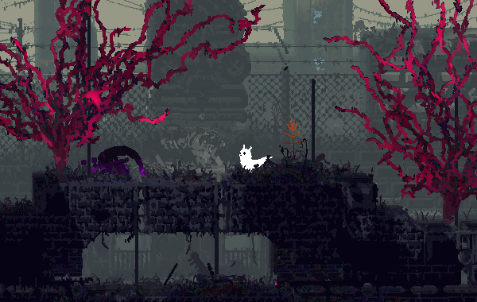

Особенности движения и гайд по продвинутому перемещению
Существа Rain World анимированы с помощью комбинации кода и традиционной анимации. Это делает их движения плавными и гибкими, а также восприимчивыми к окружающей среде.
Слизнекот очень гибкий и он умеет выполнять множество трюков, от сальто до наскока. Он отлично передвигается по суше и неплохо справляется в воде. Такие параметры позволяют успешно залезать почти куда угодно и без особых проблем преодолевать препятствия.Также слизнекот может комбинировать акробатические приемы можно комбинировать, чтобы достигать определенной цели

В данном видеоролике показаны всевозможные неочивидные приемы, которые могут помочь вам лучше освоить игру